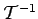

In den Anwendungen ist die Rücktransformation einer Bildfunktion in die Originalfunktion von unmittelbarem Interesse. Man spricht auch von Umkehrtransformation oder inverser Transformation. Bei Benutzung des Symbols  schreibt sich die Umkehrung der Integraltransformation (15.1b) gemäß
| (15.2a) |
Der Operator heißt der zu  inverse Operator, so daß gilt:
inverse Operator, so daß gilt:
| (15.2b) |
Die Bestimmung der Umkehrtransformation bedeutet, die Lösung der Integralgleichung (15.1a) zu suchen, in der die Funktion F(p) gegeben ist und die Funktion f(t) gesucht wird. Wenn eine Lösung existiert, kann sie in der Form
| (15.2c) |
geschrieben werden. Die explizite Bestimmung der inversen Operatoren für die verschiedenen Integraltransformationen, d.h. für verschiedene Kerne , gehört zu den grundlegenden Problemen der Theorie der Integraltransformationen. Der Anwender benutzt zur Lösung seiner Probleme vor allem die in entsprechenden Tabellen angegebenen Korrespondenzen von zusammengehörigen Bild- und Originalfunktionen (Tabellen LAPLACE-Transformationen, FOURIER-Kosinus-Transformationen,
FOURIER-Sinus-Transformationen, FOURIER-Transformationen, Exponentielle FOURIER-Transformationen und Z-Transformationen).